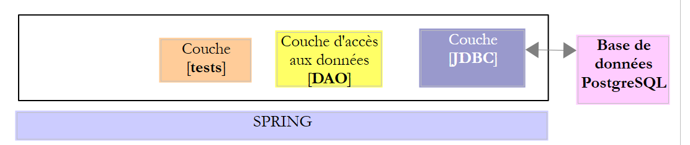
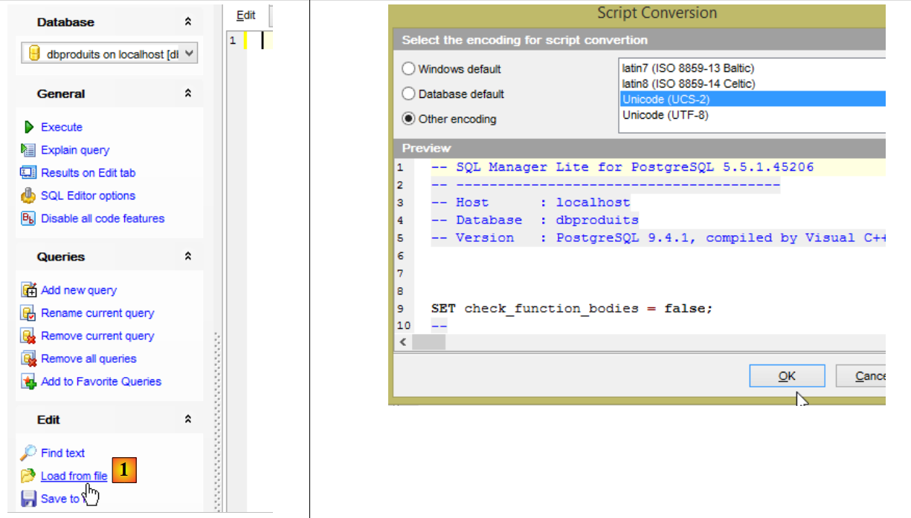
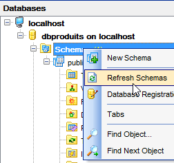
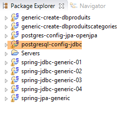
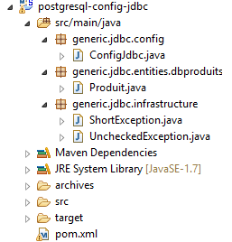
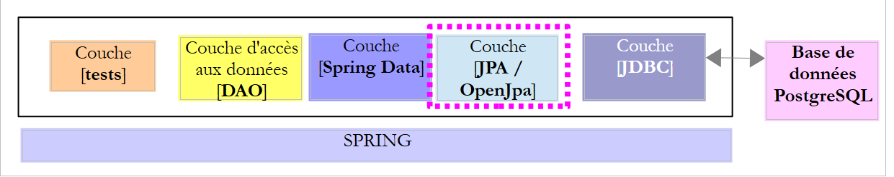
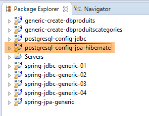
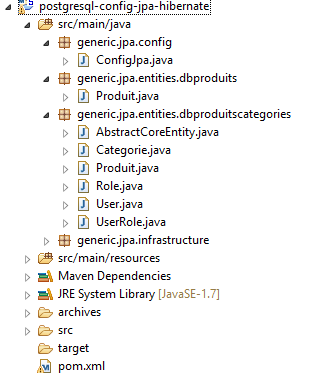
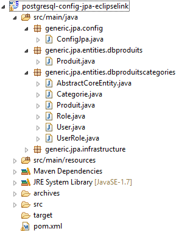

11. PostgreSQL 9.4
Nous abordons maintenant le portage sur PostgreSQL 9.4 de ce qui a été fait avec Oracle.
 |
11.1. Mise en place de l'environnement de travail
11.1.1. Environnement eclipse
Nous travaillerons avec l'environnement Eclipse suivant :
 |
Les projets PostgreSQL ci-dessus seront trouvés dans le dossier [<exemples>/spring-database-config\postgresql\eclipse].
Note : faire [Alt-F5] pour régénérer l'ensemble des projets Maven.
11.1.2. Génération des bases de données
Dans toute la suite, la connexion aux bases PostgresSQL se font avec les identifiants [postgres / postgres]. Lancez PostgreSQL et son client [PgManager] (cf paragraphe 23.7).
 |  |
 |  |
 |  |
 |  |  |
 |
- en [1], on chargera le script SQL [<exemples>\spring-database-config\postgresql\databases\dbproduits.sql] ;
 |  |
 |
- en [2], comme pour Oracle, les couches JPA utilisent des séquences pour générer les clés primaires. Ici, la séquence [produits_sequence] génère les clés primaires de la table [produits] ;
Maintenant, exécutez les configurations :
- [spring-jdbc-generic-01.IntroJdbc01] ;
- [spring-jdbc-generic-01.IntroJdbc02] ;
- [spring-jdbc-generic-03.JUnitTestDao1] ;
- [spring-jdbc-generic-03.JUnitTestDao2] ;
Elles doivent toutes réussir.
Générons maintenant la base [dbproduitscategories]. Refaites pour [dbproduitscategories] la procédure réalisée pour créer [dbproduits]. Le script SQL à charger est à l'emplacement [<exemples>\spring-database-config\postgresql\databases\ dbproduitscategories.sql] ;
 |
Maintenant, exécutez les configurations :
- [spring-jdbc-generic-04.JUnitTestDao] ;
- [spring-jpa-generic-JUnitTestDao-openjpa] ;
Elles doivent réussir toutes les deux.
11.2. Configuration de la couche JDBC
 |  |
Le projet [postgresql-config-jdbc] configure la couche [JDBC] de l'architecture de tests suivante :
 |
Le projet est analogue au projet de configuration [mysql-config-jdbc] de la couche JDBC du SGBD MySQL (cf paragraphe 3.3). Nous ne présentons que les modifications :
Le fichier [pom.xml] importe le pilote JDBC de PostgreSQL :
<project xmlns="http://maven.apache.org/POM/4.0.0" xmlns:xsi="http://www.w3.org/2001/XMLSchema-instance"
xsi:schemaLocation="http://maven.apache.org/POM/4.0.0 http://maven.apache.org/xsd/maven-4.0.0.xsd">
<modelVersion>4.0.0</modelVersion>
<groupId>dvp.spring.database</groupId>
<artifactId>generic-config-jdbc</artifactId>
<version>0.0.1-SNAPSHOT</version>
<name>configuration generic jdbc</name>
<parent>
<groupId>org.springframework.boot</groupId>
<artifactId>spring-boot-starter-parent</artifactId>
<version>1.2.3.RELEASE</version>
</parent>
<dependencies>
<!-- dépendances variables ********************************************** -->
<!-- pilote JDBC du SGBD -->
<dependency>
<groupId>postgresql</groupId>
<artifactId>postgresql</artifactId>
<version>9.1-901-1.jdbc4</version>
</dependency>
<!-- dépendances constantes ********************************************** -->
...
</dependencies>
...
</project>
- lignes 18-22 : le pilote JDBC de PostgreSQL ;
La seconde modification est dans la classe [ConfigJdbc] qui définit les identifiants d'accès aux bases :
// paramètres de connexion
public final static String DRIVER_CLASSNAME = "org.postgresql.Driver";
public final static String URL_DBPRODUITS = "jdbc:postgresql:dbproduits";
public final static String USER_DBPRODUITS = "postgres";
public final static String PASSWD_DBPRODUITS = "postgres";
public final static String URL_DBPRODUITSCATEGORIES = "jdbc:postgresql:dbproduitscategories";
public final static String USER_DBPRODUITSCATEGORIES = "postgres";
public final static String PASSWD_DBPRODUITSCATEGORIES = "postgres";
La troisième modification qui peut être apportée est celle du nombre maximal de paramètres qu'un [PreparedStatement] peut supporter :
// nombre max de paramètres d'un [PreparedStatement]
public final static int MAX_PREPAREDSTATEMENT_PARAMETERS = 10000;
Le test [JUnitTestPushTheLimits] génère des ordres SQL sur 5000 produits qui vont générer des [PreparedStatement] avec 5000 paramètres. MySQL avait supporté cette valeur. PostgreSQL également.
La quatrième modification est plus étonnante :
public final static String TAB_PRODUITS_ID = "id";
public final static String TAB_CATEGORIES_ID = "id";
Les noms des colonnes [ID] des tables [CATEGORIES] et [PRODUITS] doivent être en minuscules pour le projet [spring-jdbc-04]. Sinon, il y a un plantage sur les instructions utilisant les deux beans suivants de ce projet :
// insertion produit
@Bean
public SimpleJdbcInsert simpleJdbcInsertProduit(DataSource dataSource) {
return new SimpleJdbcInsert(dataSource)
.withTableName(ConfigJdbc.TAB_PRODUITS)
.usingGeneratedKeyColumns(ConfigJdbc.TAB_PRODUITS_ID)
.usingColumns(ConfigJdbc.TAB_PRODUITS_NOM, ConfigJdbc.TAB_PRODUITS_PRIX, ConfigJdbc.TAB_PRODUITS_DESCRIPTION,
ConfigJdbc.TAB_PRODUITS_CATEGORIE_ID);
}
// insertion catégorie
@Bean
public SimpleJdbcInsert simpleJdbcInsertCategorie(DataSource dataSource) {
return new SimpleJdbcInsert(dataSource).withTableName(ConfigJdbc.TAB_CATEGORIES)
.usingGeneratedKeyColumns(ConfigJdbc.TAB_CATEGORIES_ID)
.usingColumns(ConfigJdbc.TAB_CATEGORIES_NOM);
}
11.3. Configuration de la couche JPA OpenJpa
 |  |
Le projet [postgresql-config-jpa-openjpa] configure la couche [JPA] de l'architecture de tests :
 |
Le projet est analogue au projet de configuration [oracle-config-jpa-openjpa] de la couche JPA OpenJpa du SGBD Oracle (cf paragraphe 10.5). En effet, les deux SGBD utilisent des séquences pour générer les clés primaires. Il n'y a qu'une modification à faire. Elle est dans la définition du bean [jpaVendorAdapter] de la classe [ConfigJpa] :
// le provider JPA
@Bean
public JpaVendorAdapter jpaVendorAdapter() {
OpenJpaVendorAdapter openJpaVendorAdapter = new OpenJpaVendorAdapter();
openJpaVendorAdapter.setShowSql(false);
openJpaVendorAdapter.setDatabase(Database.POSTGRESQL);
openJpaVendorAdapter.setGenerateDdl(true);
return openJpaVendorAdapter;
}
- ligne 6 : on indique à l'implémentation JPA qu'elle va travailler avec une base PostgreSQL. L'implémentation JPA va alors adopter et les types de données propriétaires ainsi que le SQL propriétaire de ce SGBD.
Ces modifications faites, l'exécution de la configuration [spring-jpa-generic-JUnitTestDao-openjpa] doit réussir.
 |  |
11.4. Configuration de la couche JPA Hibernate
 |  |
Note : faire [Alt-F5] pour régénérer l'ensemble des projets Maven.
Le projet [postgresql-config-jpa-hibernate] est analogue au projet [oracle-config-jpa-hibernate] (paragraphe 10.4) avec les mêmes modifications qui ont présidé au portage du [oracle-config-jpa-openjpa] vers le projet [postgresql-config-jpa-openjpa] (paragraphe 11.3).
Ces modifications faites, l'exécution de la configuration [spring-jpa-generic-JUnitTestDao-hibernate-eclipselink] doit réussir.
11.5. Configuration de la couche JPA EclipseLink
 |  |
Note : faire [Alt-F5] pour régénérer l'ensemble des projets Maven.
Le projet [postgresql-config-jpa-eclipselink] est analogue au projet [oracle-config-jpa-eclipselink] (paragraphe 10.3) avec les mêmes modifications qui ont présidé au portage du [oracle-config-jpa-openjpa] vers le projet [postgresql-config-jpa-openjpa] (paragraphe 11.3).
Ces modifications faites, l'exécution de la configuration [spring-jpa-generic-JUnitTestDao-hibernate-eclipselink] doit réussir.